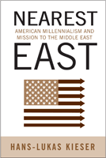

<body bgcolor="#FFFFFF" text="#000000" link="#0000FF" vlink="#CC0000" alink="#CC0000"><center><hr width="350" size="1" align="center" noshade>How missionaries and evangelical politics influenced American government policy in the Middle East<hr width="350" size="1" align="center" noshade><p><a href="https://cdcshoppingcart.uchicago.edu/Cart/ChicagoBook.aspx?ISBN=9781439902226&&PRESS=temple" target="_top">Buy this book!</a> | <a href="https://cdcshoppingcart.uchicago.edu/Cart/Cart.aspx?PRESS=temple" target="_top">View Cart</a> | <a href="https://cdcshoppingcart.uchicago.edu/Cart/Cart.aspx?PRESS=temple" target="_top">Check Out</a></p><p></p></center><!--none//--><h1>Nearest East</h1>
<H2>American Millennialism and Mission to the Middle East</H2>
<h3>Hans-Lukas Kieser</h3>
<P>cloth 1-4399-0222-4 $65.50, Mar 10, <FONT COLOR=#990033>Available</FONT>
<br>paper 1-4399-0223-2 $31.95, <FONT COLOR=#990033>Available</FONT>
<br>Electronic Book 1-4399-0222-4 $31.95 <FONT COLOR=#990033>Available</FONT>
<BR> 224 pp
6x9
</P><BLOCKQUOTE><I>"</i>Nearest East<i> offers a fascinating interpretation of American millenarian and Christian Zionist ideas in the late Ottoman and post-Ottoman Middle East. Kieser considers the role of American Protestant missionaries as mediators of American influence in the region. He demonstrates a powerful command of the histories of the late Ottoman Empire and Turkey, the Armenians, and the United States, as well as the fields of Christian and Islamic studies and biblical studies. Kieser does an excellent job of showing how fluctuating and sometimes inconsistent premillennial and postmillennial Christian ideas affected American missionary policy (and, after World War I, U.S. diplomatic policy) toward Asia Minor and later Palestine and Israel. Likewise, his description of the Armenian situation is particularly vivid and should stimulate important debate."</I>
<br>&#151<b>Heather J. Sharkey</b>, Associate Professor in the Department of Near Eastern Languages and Civilizations at the University of Pennsylvania and the author of <i>American Evangelicals in Egypt: Missionary Encounters in an Age of Empire</i></I></BLOCKQUOTE>
<p>Long before oil interests shaped American interaction with the Middle East, the U.S. had a strong influence on the late Ottoman and post-Ottoman region. Covering the period from approximately 1800 to the 1970s, Hans-Lukas Kieser�s compelling <em>Nearest East</em> tells the story of this intimate, identity-building relationship between the U.S. and the Near East.
</p><p>
Kieser chronicles how American missionaries worked to implement their belief in Biblical millennialism, enlightened modernity, and a modern Zion-Israel. Millennialism was part of an American identity that constituted itself religiously in the interaction with and the representation of the &quot;cradle of Zion.&quot; As such, &quot;going Near East&quot; was&mdash;at least to American evangelical Protestants&mdash;in some ways more important than colonizing the American West. However, many Ottoman Muslims felt threatened by the American missionaries perceiving their successful institutions as an estranging challenge from the outside.
</p><p>
Measuring the long twisted road from the missionary Zion-builders of the early 19th century to the privileged US-Israeli partnership in the late 20th century, <em>Nearest East</em> looks carefully on both sides of the relationship. Kieser uses a wide range of Ottoman, Turkish, French, German and other sources, unfamiliar to most Anglophone readers, to tell this story that will appeal to historians of all stripes.
</p>
<BR>&nbsp;<h2>Excerpt</h2><P>Excerpt available at <a href="http://www.temple.edu/tempress">www.temple.edu/tempress</a></p>
<BR>&nbsp;<h2>Reviews</h2>
<p><i>"[A]n interesting book on the ideology and works of US evangelicals�specifically, the American Board of Commissioners for Foreign Missions (ABCFM)�in the Middle East since the late 19th century....Summing Up: Recommended."</i><br>&#151<b><i>CHOICE</i></b>
<p><i>"</i>Nearest East<i> is an insightful analysis of a global history that combines American, Middle Eastern and European histories with an emphasis on a particular brand of American Christianity. It also illuminates aspects of major developments within the Ottoman Empire.... Kieser is a skillful writer. He has a great ability to find the right anecdotes and illustrative quotes.... Overall, Kieser offers a fascinating interpretation of American millennialism in the Middle East." </i><br>&#151<b><i>New Perspectives on Turkey</i></b>
<p><i>"[Kieser] thoroughly grounds his study in history, drawing from original source documents. He places American Middle East mission history within a broader historical frame, noting how British, French, German, Russian, and other forces affected developments....Kieser's work provides an informative and thought-provoking read." </i><br>&#151<b><i>International Bulletin of Missionary Research</i></b>
<p><i>"[A] rewarding perspective on the complex relationship between the United States and what he calls the 'nearest East.' Kieser understands as few others do just how important Protestant missionaries in the Ottoman Empire in the first two decades of the twentieth century were to American progressive intellectuals and religious leaders. His description of the gulf of mutual misunderstanding that separated Ottoman and American Protestant reformers is haunting. And his analysis of how those reformers lost hope after the mass murder of Armenians during World War I is revelatory.... [A]t its best, </i>Nearest East<i> casts fresh light on an episode that left lasting marks on the United States' culture and its relations with a vital part of the world."</i> <br>&#151<b><i>Foreign Affairs</i></b>
<p><i>"Kieser�s discussion of American missionary involvement in Anatolia, with extensive quotations from missionaries in the field and debates about policies, is excellent, as is his use of his millennial template for the Cold War period until 1967."</i><br>&#151<b> <i>The Journal of American History</i></b>
<p><i>"Hans-Lukas Kieser provides a well-researched account of the effect of changing American millennial expectations on American identity and on U.S.-Near East interactions from 1800 to the 1970s by examining the goals and experiences of missionaries representing the American Board of Commissioners for Foreign Missions (ABCFM) in Palestine and Anatolia....[A] refreshing contribution to the scholarship of American missions and of U.S.-Middle East relations. </I>Nearest East<I> will be of interest to specialists of nineteenth and twentieth century history and religious studies." </i><br>&#151<b><i>Review of Middle East Studies</i></b>
<BR>&nbsp;<h2>Contents</h2><P>
<p>Acknowledgments
<br>Introduction
<br><br>
1 The United States and the Near East, circa 1800
<br>2 A Quest for �Zion� and Peace on Earth: Mission to the Bible Lands
<br>3 Dream and Trauma: Missionary America and Young Turkey, 1908-1923
<br>4 Oil, Palestine-Israel, and Empire of the Good
<br>5 American Steps and Shortcuts to �Zion� after 1967
<br><br>
Conclusion
<br>Notes
<br>Selected Bibliography
<br>Index </p>
</P><BR>&nbsp;<H2>About the Author(s)</H2>
<table><tr><td valign="top"><img src="/tempress/authors/2077_au1.gif" height="90" width="75"></td><td width="100%" valign="middle"><p><b>Hans-Lukas Kieser</b> is Professor for Modern History at the University of Zurich. He is editor of <em>Turkey beyond Nationalism</em>, a coeditor (with Dominik J. Schaller) of <em>The Armenian Genocide and the Shoah</em> and the author of <em>Der verpasste Friede </em>(The Squandered Peace) and of <em>A Quest for Belonging</em>.</P></td></tr></table>
<BR><H2>Subject Categories</H2>
<p><A HREF="/tempress/history.html" TARGET="_top">History</a>
<BR><A HREF="/tempress/religion.html" TARGET="_top">Religion</a>
<BR><A HREF="/tempress/sociology.html" TARGET="_top">Sociology</a>
</p>
<BR><h2 class="inpageheading">In the series</H2>
<P><I><a href="http://www.temple.edu/tempress/phsc.html" onMouseOver="window.status='Click for other books in this series!'; return true;" onMouseOut="window.status=''; return true;" target="_top">Politics, History, and Social Change</a></i>, edited by John C. Torpey.
</p><p>This series will disseminate serious works that analyze the social changes that have transformed our world during the twentieth century and beyond. The main topics to be addressed include international migration; human rights; the political uses of history; the past and future of the nation-state; decolonization and the legacy of imperialism; and global inequality. The series will also translate into English outstanding works by scholars writing in other languages.</p>
<p align="center"><a href="https://cdcshoppingcart.uchicago.edu/Cart/ChicagoBook.aspx?ISBN=9781439902226&&PRESS=temple" target="_top">Buy this book!</a> | <a href="https://cdcshoppingcart.uchicago.edu/Cart/Cart.aspx?PRESS=temple" target="_top">View Cart</a> | <a href="https://cdcshoppingcart.uchicago.edu/Cart/Cart.aspx?PRESS=temple" target="_top">Check Out</a></p><p><font face="Arial" size="1"><a href="copyright.html" onMouseOver="window.status='Web Copyright Policy';return true;" onMouseOut="window.status=''" title="Web Copyright Policy">&copy;</a> 2015 <a href="http://www.temple.edu" target="new" onMouseOver="window.status='Link to Temple University home page';return true;" onMouseOut="window.status=''" title="Link to Temple University home page">Temple University</a>. All Rights Reserved. http://www.temple.edu/tempress/titles/2077_reg.html</font></p>